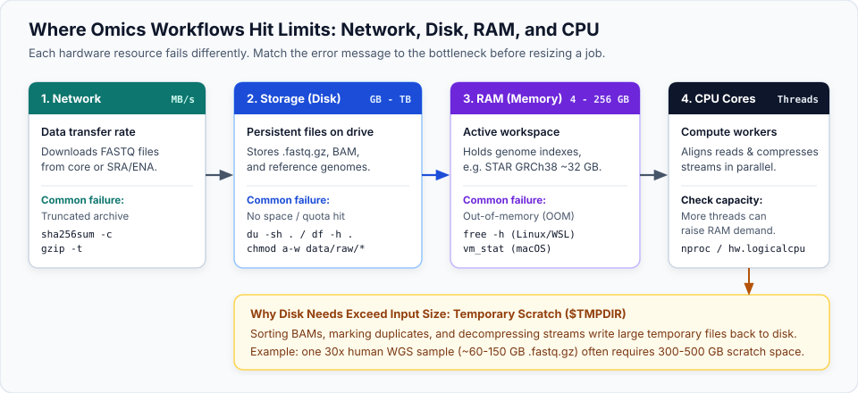
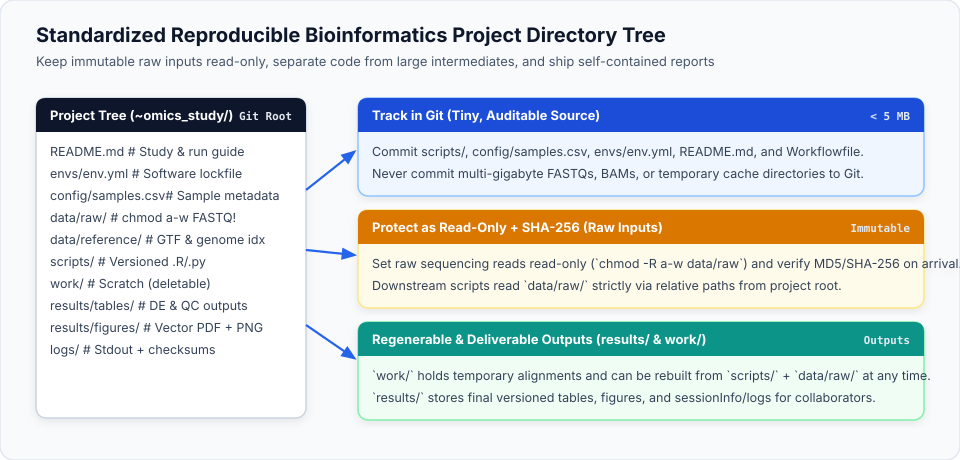

Computer and Data Fundamentals for Biologists
Nasir Mahmood Abbasi, PhD
Bioinformatics Educator

Before running an alignment or count pipeline, you need to know where your files live, which hardware limit a job can hit first, and whether downloaded sequencing files arrived intact. In about 20-25 minutes, you will build a clean project folder, create a tiny paired-end FASTQ fixture, inspect compressed reads safely, and save a verified checksum log.
Format: Hands-on lab (20-25 min). You will build a tiny synthetic paired-end FASTQ fixture on your own computer and verify file sizes, permissions, gzip integrity, and SHA-256 checksums. When real sequencing deliveries arrive, run the same checks against the provider's manifest before launching analysis.
What you will build and prerequisites
By the end of this lab, you will have a documented project tree at ~/projects/my-study, read-only raw FASTQ inputs, and a saved verification log in logs/. You will also be able to:
- Tell apart CPU (processor cores), RAM (working memory), storage (persistent disk and scratch space), and network bandwidth (transfer speed), and match error messages to the right limit.
- Read and write absolute vs. relative paths, double extensions such as
.fastq.gz, and UNIX file permissions (-rw-r--r--,chmod a-w). - Inspect gzipped FASTQ files without writing huge uncompressed copies to disk.
- Run two distinct integrity checks (
sha256sum -candgzip -t) and recognize what each catches.
Prerequisites: A Bash terminal on Linux, macOS, or Windows Subsystem for Linux (WSL). No prior programming, R, Python, or package installation is needed. Everything here uses built-in shell utilities.
1. Why hardware and file habits matter in omics
Sequencing runs and proteomics outputs are large, compressed text or binary files. A single 30x human whole-genome sequencing (WGS) sample produces roughly 60-150 GB of compressed paired-end FASTQ files, and sorting alignments or marking duplicates often needs 300-500 GB of temporary scratch space on top of the inputs. Meanwhile, an RNA-seq aligner such as STAR loads a genome index directly into memory (RAM): for the human GRCh38 reference genome, STAR requires roughly 30-32 GB of RAM (ideally 32-40 GB), so a 16 GB laptop will crash with an out-of-memory error even if the hard drive has 500 GB free.

| Resource | What it does | Typical omics bottleneck | Command to check |
|---|---|---|---|
| Network | Moves files from sequencing core, SRA, or ENA to your machine | Interrupted or truncated downloads | sha256sum -c, gzip -t |
| Storage (disk & scratch) | Stores files persistently; holds temp files during sorting | No space left on device or quota hit during BAM sorting | du -sh ., df -h . |
| RAM (memory) | Fast volatile workspace for genome indexes and count matrices | Killed or out of RAM when loading GRCh38 (~32 GB for STAR) | free -h (Linux), vm_stat (macOS) |
| CPU cores | Executes alignment, compression, and counting in parallel | Slow runtime; adding threads can also raise RAM use per worker | nproc (Linux), sysctl -n hw.logicalcpu (macOS) |
2. Paths, extensions, and file permissions
Before typing commands, three UNIX file concepts prevent most beginner mix-ups:
- Absolute vs. relative paths: An absolute path starts at the filesystem root
/(for example/home/alex/projects/my-study/data/raw;~expands to your home folder). A relative path starts from your current working directory (for exampledata/raw/sample_R1.fastq.gz). Keep analysis scripts portable by running from the project root and using relative paths instead of hardcoding your personal username. - Double file extensions (
.fastq.gz): The inner extension (.fastq) names the data format (plain-text sequencing reads), and the outer extension (.gz) names the compression wrapper (gzip). Unpacking a 40 GB.fastq.gzfile just to peek inside can suddenly consume 120-160 GB of disk; stream it throughzcatorgzip -dcinstead. - UNIX permissions (
-rw-r--r--): Inls -lahoutput, the first character shows file type (-for regular file,dfor directory), followed by three triplets for owner, group, and others usingr(read),w(write), andx(execute or enter directory). Once raw FASTQ files pass verification, removing write bits withchmod a-wturns them read-only (-r--r--r--) so no script can overwrite them by accident.
3. Build a documented project directory
Separating immutable raw inputs from scripts, regenerable intermediates, outputs, and logs keeps you from losing track of which files came from the sequencer and which were generated by an experiment. The command below uses Bash brace expansion ({a,b}) to create the full directory tree in one step.
# From your home or a working directory, create a project folder and subfolders.
mkdir -p ~/projects/my-study/{data/raw,data/processed,scripts,results,logs}
# Create an initial README to document purpose and provenance.
printf "# my-study\n\nRaw data: data/raw/\nProcessed data: data/processed/\n" > ~/projects/my-study/README.md
Here mkdir -p creates missing parent folders without failing if a directory already exists. Replace my-study with a descriptive study name for your own work. For a full project layout with sample sheets and Git ignore rules, see the reproducible workflow layout guide.

4. Create a tiny synthetic FASTQ fixture
Rather than downloading gigabytes of real sequencing data just to practice shell commands, generate two tiny compressed paired-end FASTQ files (sample_R1.fastq.gz and sample_R2.fastq.gz) and a matching SHA256SUMS manifest inside data/raw/. First confirm that Bash, gzip, and either sha256sum (Linux) or shasum (macOS) are available with command -v bash gzip sha256sum shasum.
mkdir -p ~/projects/my-study/data/raw
cd ~/projects/my-study/data/raw
printf '@demo/1\nACGT\n+\nIIII\n@demo/2\nTGCA\n+\nIIII\n' | gzip -c > sample_R1.fastq.gz
printf '@demo/1\nTGCA\n+\nIIII\n@demo/2\nACGT\n+\nIIII\n' | gzip -c > sample_R2.fastq.gz
sha256sum sample_R1.fastq.gz sample_R2.fastq.gz > SHA256SUMS
On macOS without GNU sha256sum, create the manifest with shasum -a 256 sample_R1.fastq.gz sample_R2.fastq.gz > SHA256SUMS. Each synthetic read here uses the standard four-line Sanger FASTQ layout (Cock et al., 2010): line 1 starts with @ (read ID), line 2 holds nucleotide bases (ACGT), line 3 is +, and line 4 holds Phred+33 ASCII quality characters (IIII encodes ASCII 73, which is Phred Q40). Generating a local manifest here only sets up our practice exercise; for real sequencing deliveries, always keep the provider's original checksum file untouched.
5. Check your location, disk usage, and free space
Run these checks from the project root before downloading large datasets or starting an alignment.
# Show where you are and list contents with human-readable sizes.
cd ~/projects/my-study
pwd
ls -lah
# Show disk usage for this project directory (summary).
du -sh . | tee logs/disk_usage_$(date +%F).txt
# Show overall filesystem space and usage.
df -h .
Observed output on Linux (exact user, timestamps, and filesystem totals vary by machine):
/home/alex/projects/my-study
total 28K
drwxr-xr-x 6 alex alex 4.0K Nov 26 20:59 .
drwxr-xr-x 3 alex alex 4.0K Nov 26 20:59 ..
drwxr-xr-x 4 alex alex 4.0K Nov 26 20:59 data
drwxr-xr-x 2 alex alex 4.0K Nov 26 20:59 logs
-rw-r--r-- 1 alex alex 64 Nov 26 20:59 README.md
drwxr-xr-x 2 alex alex 4.0K Nov 26 20:59 results
drwxr-xr-x 2 alex alex 4.0K Nov 26 20:59 scripts
44K .pwdprints your absolute working directory so you never run cleanup or transfer commands in the wrong folder.ls -lahshows long details (-l), hidden dotfiles such as.and..(-a), and human-readable units likeKorG(-h).du -sh .totals disk space used inside the current folder and pipes a copy throughteeintologs/with today's ISO date (date +%F).df -h .reports free space on the mounted filesystem holding..
du vs. df vs. HPC quota. Use du -sh to see how much space your project consumes, and df -h . to see how much space the disk volume has left. On a shared HPC cluster, df -h can show terabytes free across the whole filesystem while your personal or lab quota is almost full; check your cluster quota command (such as quota -s or lfs quota) before staging large FASTQs.pwd ends in projects/my-study and that logs/disk_usage_YYYY-MM-DD.txt was created inside logs/.6. Check available CPU cores and RAM
On Linux or WSL, inspect how many logical CPUs and how much RAM are visible before setting thread counts or submitting a cluster job. On macOS, use sysctl -n hw.logicalcpu for logical CPUs and vm_stat (multiply page counts by page size) for memory.
# Linux/WSL: visible logical CPUs and current memory/swap summary
nproc
free -h
# Storage available at this project's location
cd ~/projects/my-study
df -h .
Example output (from a 12-thread, 30 GiB Linux workstation):
12
total used free shared buff/cache available
Mem: 30Gi 19Gi 525Mi 1.1Gi 12Gi 11Gi
Swap: 15Gi 3.7Gi 12GiNotice the available column in free -h (11Gi here), not just free (525Mi): Linux keeps reusable filesystem cache in buff/cache and releases it when an application needs RAM. On a shared HPC node, nproc and free -h often show the physical node total rather than your Slurm job allocation; inside a job script, rely on the resources you requested with --cpus-per-task and --mem. For network throughput, time one small authorized transfer against your provider instead of guessing from an Ethernet link rating.
7. Inspect compressed FASTQ inputs safely
Never run gunzip on multi-gigabyte FASTQ files just to inspect the first few reads. The commands below verify the container format, inspect compressed size metadata, and print the first two records straight from the gzip stream without writing an uncompressed copy to disk.
# Show file type and compression container. This is safe and non-destructive.
file data/raw/sample_R1.fastq.gz
file data/raw/sample_R2.fastq.gz
# Show the compressed and uncompressed sizes (gzip).
gzip -l data/raw/sample_R1.fastq.gz
gzip -l data/raw/sample_R2.fastq.gz
# Peek at the first few lines of a FASTQ file without writing uncompressed contents to disk.
zcat data/raw/sample_R1.fastq.gz | head -n 8
Observed output on our synthetic fixture:
data/raw/sample_R1.fastq.gz: gzip compressed data, from Unix, original size modulo 2^32 40
compressed uncompressed ratio uncompressed_name
49 40 22.5% data/raw/sample_R1.fastq
@demo/1
ACGT
+
IIII
@demo/2
TGCA
+
IIIIThree practical details in that output often surprise learners:
- Why 49 bytes compressed is larger than 40 bytes uncompressed: A gzip container adds roughly 18 bytes of header and trailer metadata, which outweighs compression on an 8-line fixture. Real multi-gigabyte FASTQ files typically shrink by 3x to 4x.
- Why
filesaysmodulo 2^32: The gzip specification (RFC 1952) stores uncompressed size in a 32-bit trailer field (ISIZE), which caps at 4 GiB minus 1 byte. Older gzip releases (before 1.12) underreportgzip -lsizes for FASTQs larger than 4 GiB uncompressed or files made of concatenated gzip streams; gzip 1.12+ reads through the stream, or you can measure true uncompressed bytes directly withgzip -dc file.fastq.gz | wc -c. - macOS
zcatvs.gzcatvs.gzip -dc: On macOS, built-inzcatexpects legacy.Zfiles and fails withcan't stat: sample_R1.fastq.gz (sample_R1.fastq.gz.Z): No such file or directory. Use built-ingzcaton macOS, or usegzip -dc, which streams.gzfiles to stdout identically on both Linux and macOS. Also avoid wrapping... | head -n 8insideset -o pipefailon large FASTQs: whenheadcloses the pipe after 8 lines,zcatreceivesSIGPIPE(exit status 141), causing a false failure even though the file is fine.
In real Illumina Casava 1.8+ and DRAGEN outputs, read headers look like @A00123:8:H5KJ7DSXX:1:1101:10004:1000 1:N:0:ACGTACGT+TGCATGCA, encoding @<instrument>:<run>:<flowcell>:<lane>:<tile>:<x>:<y> <read>:<is_filtered>:<control_number>:<index>. Here 1 marks Read 1, N means the read passed the chastity filter (Y means failed), 0 means not a control read, and dual indexes are joined by +.
8. Verify checksums, test gzip streams, and lock raw data
Seeing valid headers in the first 8 lines does not guarantee the rest of a 20 GB file survived download. Always run both a cryptographic checksum check (against the provider's manifest) and a full-stream decompression test (gzip -t), saving the log in logs/. Never regenerate a replacement manifest from a file whose transfer you are testing.
(
cd ~/projects/my-study/data/raw
set -e -o pipefail
sha256sum -c SHA256SUMS 2>&1 | tee ../../logs/checksum_validation_$(date +%F).log
# If a real provider supplies MD5SUMS instead, use this command, not sha256sum:
# md5sum -c MD5SUMS 2>&1 | tee ../../logs/checksum_validation_$(date +%F).log
# On macOS use shasum -a 256 -c SHA256SUMS for SHA-256, or install GNU md5sum (brew install coreutils) for MD5SUMS.
# Also verify gzip streams can be read (a non-zero exit stops this block).
gzip -t sample_R1.fastq.gz sample_R2.fastq.gz
echo "gzip exit status: 0"
)
sample_R1.fastq.gz: OK, sample_R2.fastq.gz: OK, and gzip exit status: 0, and writes a dated record to logs/checksum_validation_YYYY-MM-DD.log. Stop if any file reports FAILED, a file is missing, or gzip -t exits non-zero.sha256sum -c (or md5sum -c when a repository such as ENA supplies MD5) proves your downloaded bytes are identical to the provider's published bytes, catching silent bit flips or swapped sample files. gzip -t reads every compressed block (including concatenated gzip members) and checks its CRC-32 trailer, catching truncated or corrupt archives even when no checksum file is available. Neither check verifies biological sample identity, consent, or experimental design.Self-check: watch a deliberate checksum failure
To see how sha256sum -c catches a 1-byte corruption before you trust real data, copy sample_R1.fastq.gz into a temporary directory, append a single character x, and run the check against the original hash. A trap cleans up the temporary folder automatically.
(
set -e
cd ~/projects/my-study/data/raw
tmpdir=$(mktemp -d)
trap 'rm -rf "$tmpdir"' EXIT
cp sample_R1.fastq.gz "$tmpdir/sample_R1.check-demo.fastq.gz"
printf 'x' >> "$tmpdir/sample_R1.check-demo.fastq.gz"
expected=$(awk '$2 == "sample_R1.fastq.gz" {print $1}' SHA256SUMS)
test -n "$expected"
printf '%s sample_R1.check-demo.fastq.gz\n' "$expected" > "$tmpdir/CHECK-DEMO.SHA256SUMS"
(
cd "$tmpdir"
if sha256sum -c CHECK-DEMO.SHA256SUMS; then
echo "Unexpected match; inspect the demonstration."
else
echo "Expected checksum failure: the altered copy differs from the original hash."
fi
)
)Expected diagnostic: sample_R1.check-demo.fastq.gz: FAILED followed by sha256sum: WARNING: 1 computed checksum did NOT match and the expected-failure message. On macOS, replace sha256sum -c with shasum -a 256 -c. Never modify real provider data or manifests.
Once your raw inputs pass verification and you finish testing, remove write permissions on the raw FASTQ files so accidental redirection (>) cannot clobber them:
chmod a-w ~/projects/my-study/data/raw/*.fastq.gz
ls -lh ~/projects/my-study/data/raw/In the resulting ls -lh output, the permissions column changes from -rw-r--r-- to -r--r--r--.
9. Count FASTQ records safely in a stream
Running zcat file.fastq.gz | wc -l blindly on a broken file can print 0 and mislead a script into thinking an empty sample succeeded. The shell function below sets set -o pipefail (so a failure in zcat propagates through the pipe), tests gzip integrity first, verifies a non-zero line count divisible by 4, and then divides lines by 4.
# Each FASTQ record is 4 lines. Check the gzip stream before counting it.
set -o pipefail
count_fastq_records() {
local fastq=$1
if ! gzip -t "$fastq"; then
printf 'Cannot count records: gzip integrity check failed for %s\n' "$fastq" >&2
return 1
fi
zcat "$fastq" | awk 'END {
if (NR == 0) {
print "No lines found; refusing to report a record count" > "/dev/stderr"
exit 1
}
if (NR % 4 != 0) {
print "Incomplete FASTQ record: line count is not divisible by 4" > "/dev/stderr"
exit 1
}
print NR / 4 " records"
}'
}
count_fastq_records data/raw/sample_R1.fastq.gz
Expected result: 2 records. Now test the failure path on a missing filename (exit status must be non-zero with no record count printed):
count_fastq_records data/raw/missing_R1.fastq.gz
Expected error output:
gzip: data/raw/missing_R1.fastq.gz: No such file or directory
Cannot count records: gzip integrity check failed for data/raw/missing_R1.fastq.gzOn macOS, substitute gzcat or gzip -dc for zcat inside count_fastq_records. Note that counting reads scans the compressed file twice (once for gzip -t, once for awk) and checks line count divisibility by 4 rather than per-read base/quality length agreement or R1/R2 mate pairing (use dedicated QC tools such as FastQC or SeqKit for full read validation).
10. Troubleshooting common errors
| Error or symptom | Likely cause | Fix |
|---|---|---|
Permission denied when writing or reading | File is locked read-only (-r--r--r--), owned by another user, or on a read-only mount | Inspect with ls -lah. Never edit files in data/raw/; copy into data/processed/ or ask your sysadmin if a shared directory lacks group read access. |
Killed or STAR fatal error trying to allocate genome arrays | Process exceeded available RAM (OOM killer) | Check free -h or Slurm sacct MaxRSS. Request more RAM (32-40 GB for human GRCh38 STAR), reduce parallel samples, or use sparse index options. |
No space left on device or Disk quota exceeded | Full filesystem or small default /tmp during sorting | Run df -h . and cluster quota checks. Clean old files in work/ or point export TMPDIR=/path/to/scratch to a larger volume. |
sha256sum -c reports FAILED | Truncated transfer, network corruption, or wrong manifest version | Do not edit SHA256SUMS. Re-download the affected file and re-run verification. |
gzip -t reports unexpected end of file or CRC error | Corrupted or incomplete .gz download | Re-download using a single-stream or resumable client (curl -C -, rsync --partial, or SRA Toolkit prefetch) and re-test. |
macOS zcat: can't stat: ... (.Z) | macOS native zcat expects legacy .Z archives | Use gzcat or cross-platform gzip -dc instead of zcat. |
11. Practice check
Quick scenario check: diagnose a failing RNA-seq run before re-running it
Suppose your data/raw/ folder holds 18 GB of paired-end human RNA-seq .fastq.gz files. Your laptop has 250 GB free on disk (df -h .) and 16 GB total RAM (free -h). You launch STAR against human GRCh38 and the job exits immediately with EXITING: fatal error trying to allocate genome arrays. Which resource failed, and why did df -h not warn you?
Solution: RAM failed, not disk storage. df -h . measures persistent hard-drive space (250 GB free is plenty for 18 GB of inputs), whereas STAR loads the GRCh38 suffix-array index into volatile RAM (~30-32 GB). Moving to an HPC node or workstation with at least 32-40 GB of RAM (or using a lighter pseudoaligner) resolves the crash.
12. Scope and platform notes
- Scope of this lab: This lesson covers local file layout, hardware resource limits, gzip stream inspection, and checksum integrity on Bash using preinstalled OS tools. Software environment setup (Micromamba/Conda, or isolated project
.venvenvironments rather than globalpip install) is covered later in the Micromamba and Conda guide. - Checksum algorithms: Prefer SHA-256 when available for stronger collision resistance. Archives such as ENA and many sequencing cores still supply MD5 manifests; match whichever algorithm the provider published and record it in
logs/. - Data governance: Passing a checksum proves byte-level integrity, not permission to analyze or redistribute clinical or controlled-access samples. Verify ethics approvals and data-use agreements before sharing outputs.
13. References and next steps
- GNU Coreutils Manual (ls, du, df, mkdir, chmod, printf)
- GNU Coreutils: SHA-2 checksum utilities (sha256sum)
- GNU Gzip Manual (gzip, gzip -t, gzip -l, zcat)
- Cock PJA et al. (2010), The Sanger FASTQ file format for sequences with quality scores, Nucleic Acids Research (PMC2847217)
- Dobin A, STAR Aligner Manual (GRCh38 genome index RAM requirements)
- NCBI SRA: Downloading public sequencing runs with the SRA Toolkit
Where to go next: Continue to Command-Line Navigation for Bioinformatics to practice moving through directories and safe file operations, then learn Command-Line Text Processing, isolated environments in Conda and Mamba, and full reproducible project structures.
These examples use Bash and system-provided command-line utilities rather than a pinned software environment. Record your platform and utility versions alongside an analysis by capturing bash --version, gzip --version, and sha256sum --version (or the relevant macOS utility's version/help output); re-check platform-specific options in the official manuals. If a command does not work, please report it through the Contact page.
Author: Nasir Mahmood Abbasi, PhD - Category: Foundations & Prerequisites